Deep-sky objects shot with a DWARF 3 smart telescope · wide-field stacked exposures
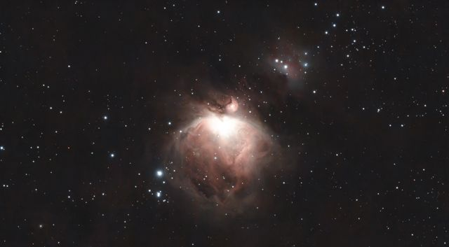
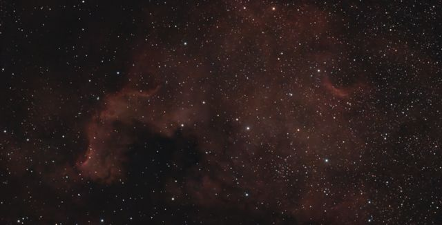
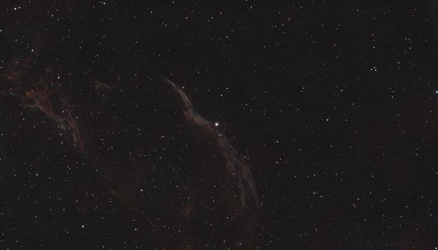
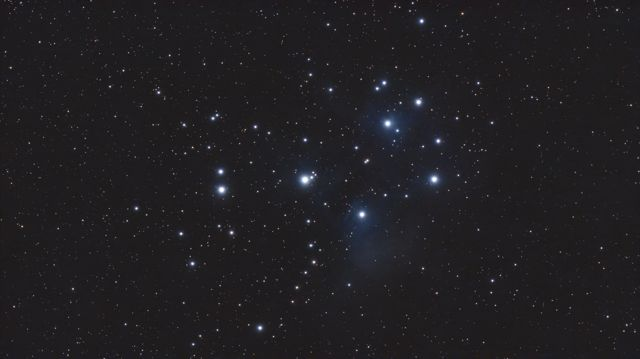
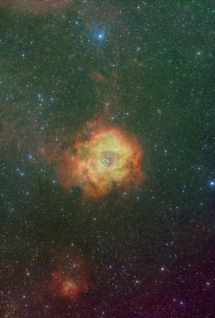
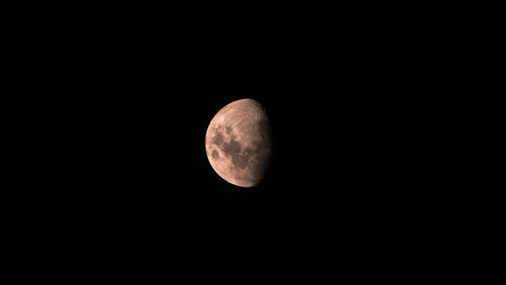
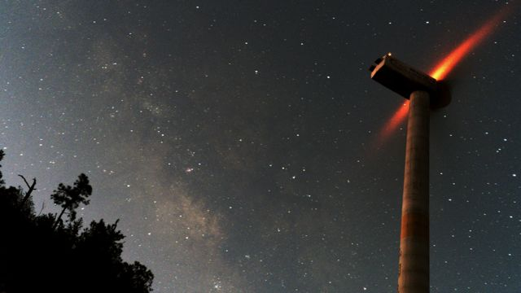
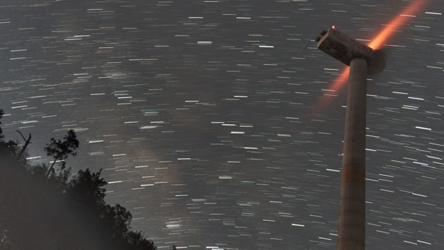
Perseids night · Qixinghu (七星湖), Hobq Desert, Inner Mongolia · 2026-08-08/09 · phone & DWARF 3
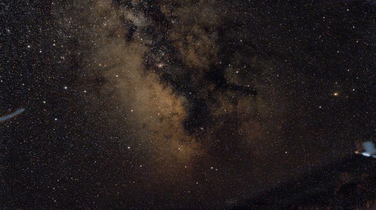
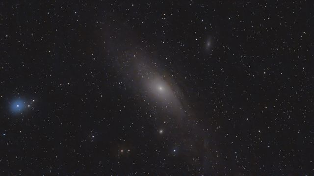
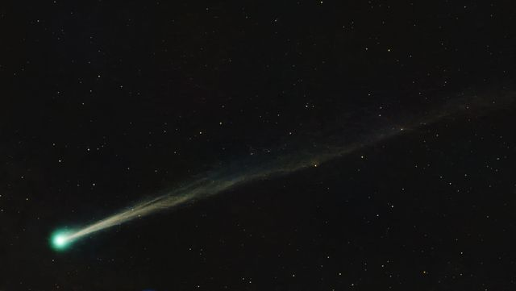
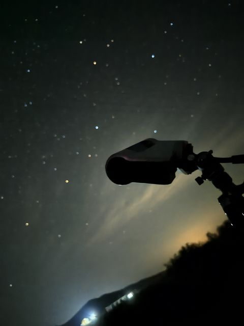
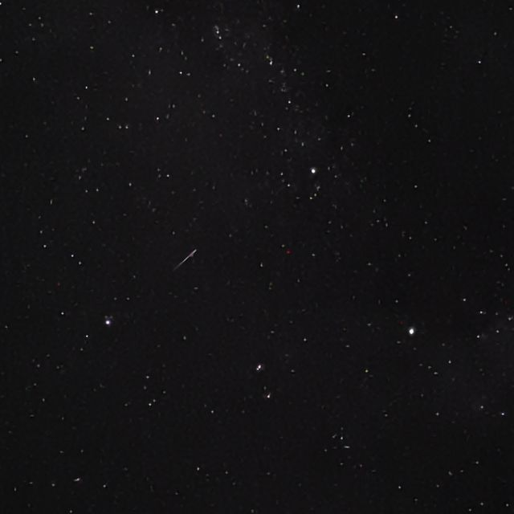
Wind farm on the ridge, from golden hour to sunset · 2026-03-14 · DJI Flip
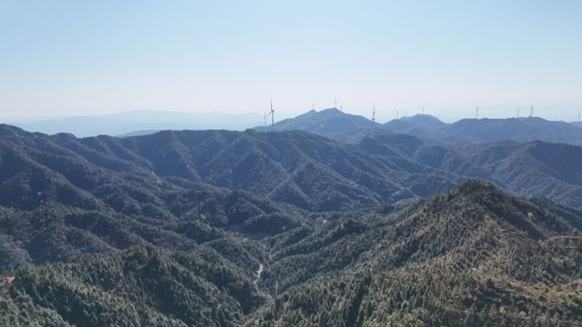
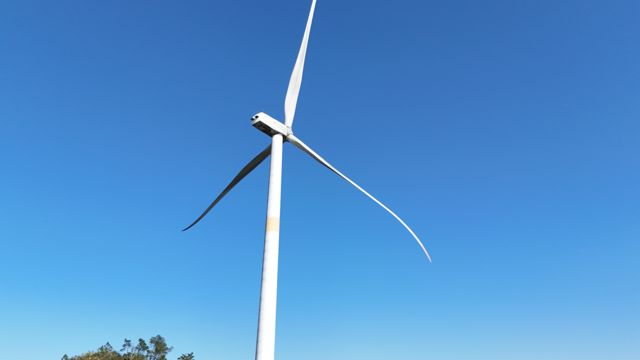
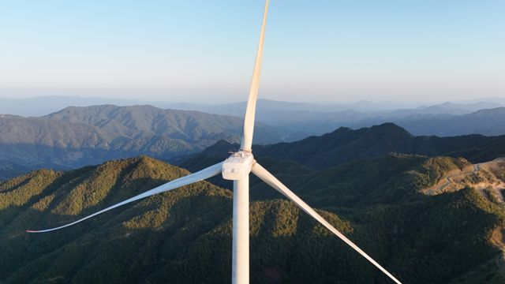
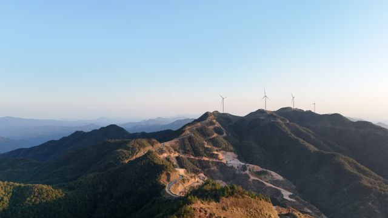
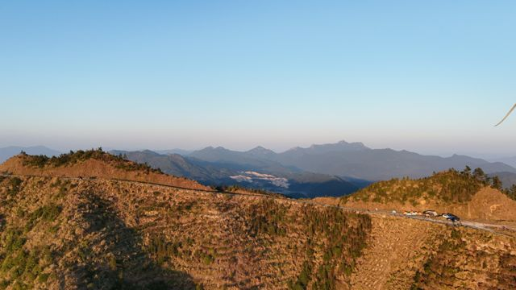
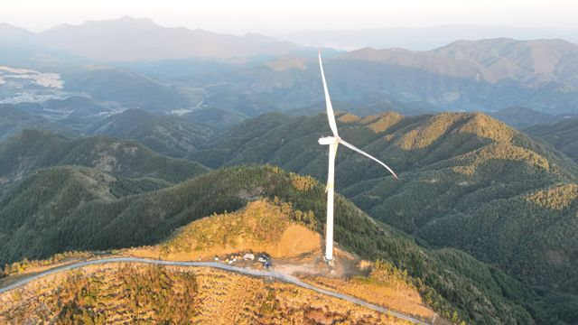
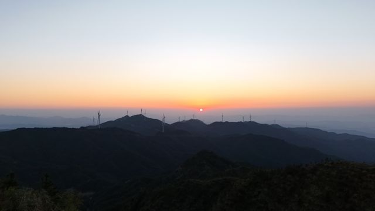
Elsewhere · DJI drone
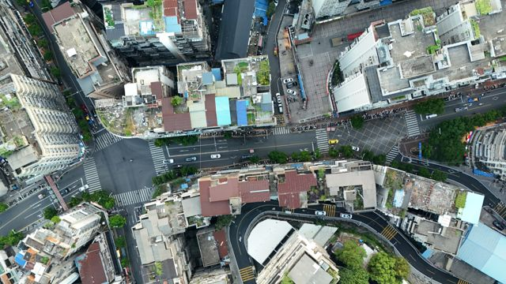
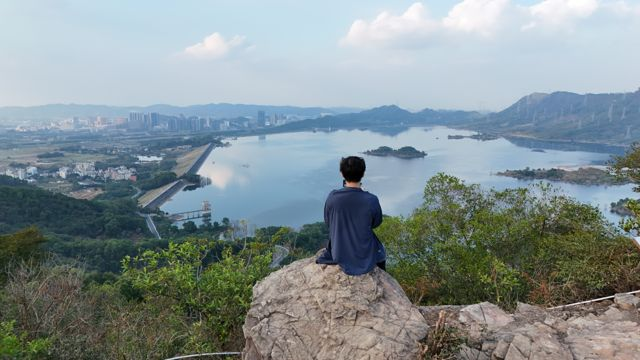
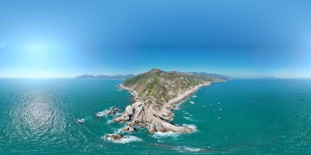
Qixinghu (七星湖) & the road there — Hobq Desert, dunes, sunflowers and steppe · 2026-08-08/09
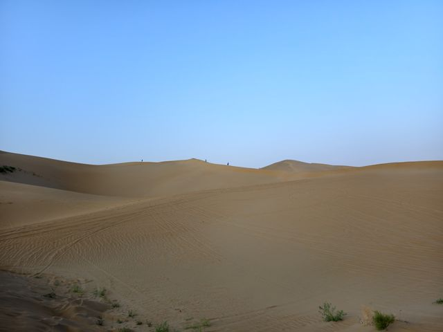
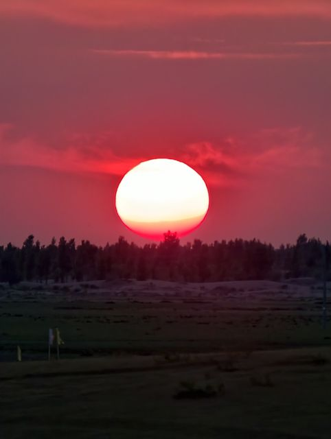
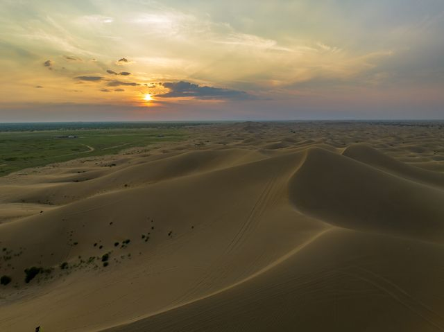
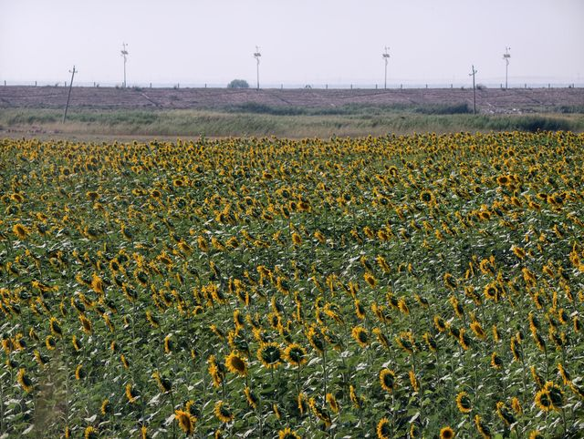
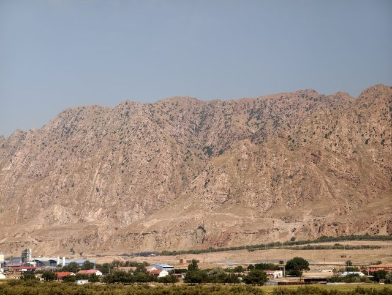
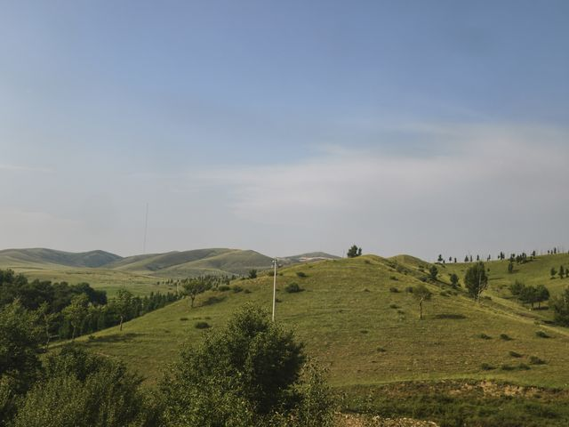